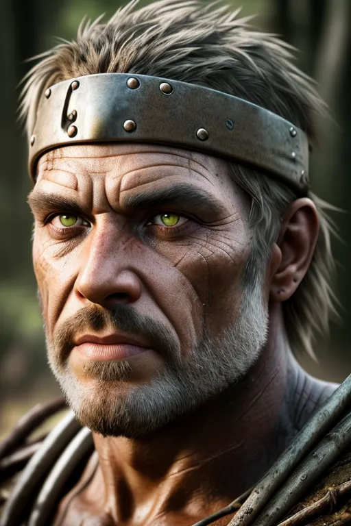
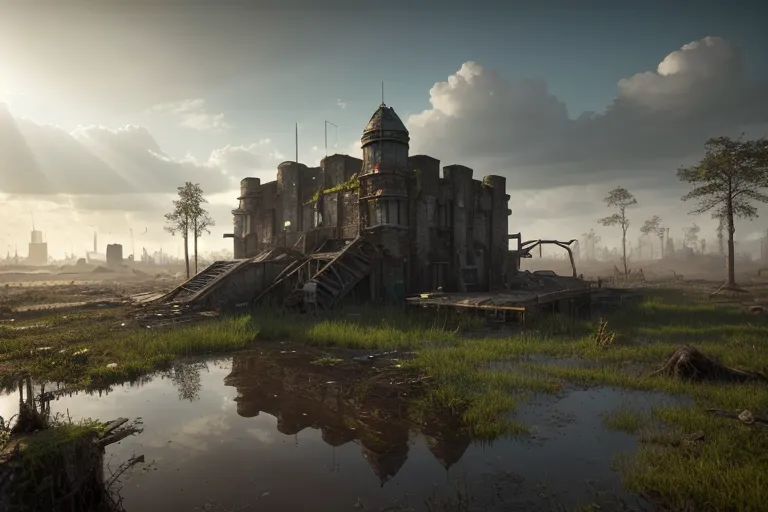
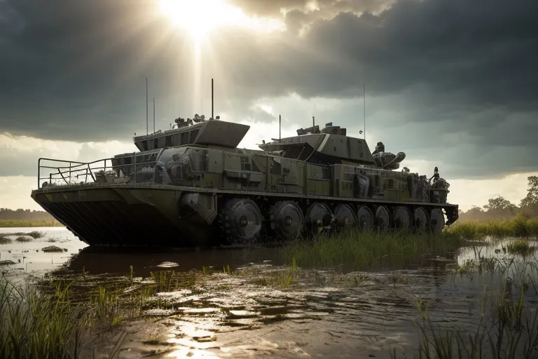
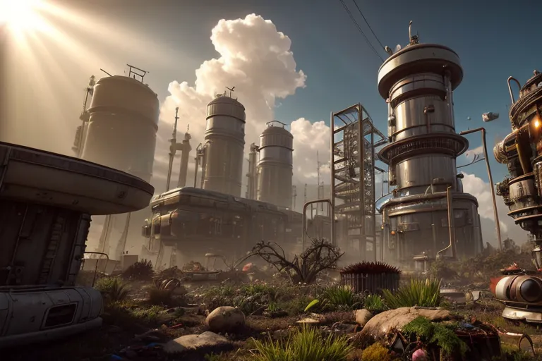

The Bayou Raiders are a large organized group of raider clans who rule over the Bayou, a large swampy region to the south west of Houston. They are feared for their ruthlessness, brutality, excellent strategy and tactics, and unorthodox weapons. The Bayou Raiders commonly make use of tamed monsters, toxins, poisons, and acids in their arsenal, never hesitating to deploy such horrors on those who dare resist them.
As one would expect of an organization named for a biome, the Bayou Raiders are experts at combat and survival in all manner of swamps and wetlands. They know the Bayou like the back of their hands and have made their lands unassailable thorough the use of ambush tactics and hidden trails to destroy any armed force intruding on their lands through guerilla tactics.
When working offense rather than defense, the Raiders make use of airboats and other watercraft to strike communities close to any waterway they can reasonably reach from their territory. These raids are frequent for everyone living within a few hours of the Bayou by water, so much so that neighboring communities have developed tactics specifically designed to counter the Bayou Raider’s common tricks, forcing the Raiders to innovate and improve year after year.
In addition to raiding, the Bayou Raiders are skilled hunters and fishermen. They have developed unique techniques for catching mutated fish and other creatures that inhabit the swamps and bayous, enough to keep themselves and their many serfs fed and productive.
Their serfs preform many duties, none of which are food production. The Raiders ensure they are the soul gatherers, holders, and distributors of food, which they use as their primary means of population control. Their serfs instead gather the many natural resources found within the Bayou, and use them to pay for their meals. This relationship is the backbone of the Bayou’s economy, and ensures the Raiders have everything they need to continue their operations.
The Bayou Raiders are a united group of clans, each with its own territory and King. The clans often fight amongst themselves, occasionally via border skirmishes but most commonly via formalized sports and competitions. Inter-clan wars occur rarely, as most of their vitriol is tempered by their mutual need for one another to survive or settled in their various tournaments. One on one “Honor Duels” are also quite common. When the clans do war, these wars are often short lived due to the High King who unites them bringing the other clans in to put a stop to the violence. This always results in the Kings who warred being executed and replaced, deprived of even their legacies as their heirs are also executed.
In the early days, when the Raiders were loosely allied gangs who made use of off road vehicles and airboats to navigate the wetlands which would become The Bayou. The Bayou Raiders alliance developed as the individual gangs got a taste of true power and worryingly realized that working together was what allowed them to live as kings while most people scrambled for scraps of food during the first years of the Wasteland’s existence.
They formally united as clans under a High King in 2092, though neglected to come up with a name for themselves. Thus, they came to be known by what their victims referred to them as, “the bayou raiders.”
The Bayou Raiders hold over the Bayou zone is absolute and ironclad. They fund themselves through taxation, reserving the majority of their raider activities for “barbarians” by which they mean anyone not living within the Bayou. They have become a regional culture over many generations, ensuring that their kind will survive anything shy of a war which sees them eradicated as a people.
The Bayou Raiders existed as scattered raider tribes within the Bayou until one tribe (the Robertsons) led by Jack Roberston had grown powerful enough to conquer several of the others. Their momentum snowballed until June of 2092 when the remaining free clans surrendered out of fear. With the might of 19 clans under his belt Jack elected to fall back on his heritage as a second generation Scottish-American and demanded to be called High King Macfie and organized his people to emulate the ancient Highland Scots.
Or at least, his interpretation of their culture.
The system stuck, primarily due to High King Macfie’s self-authored “Code of Clansmen” which appealed greatly to the kind of people who became raiders in the early days of the new world. The Code is as follows:
Protect Your Family Honor the Elders Teach the Young Be Loyal to your Friends Voice Your Opinion Stand Your Ground Take Charge When Others Show Weakness Play When you Can Work When you Must Always Leave Your Mark
While on the surface this seems a fine code of conduct, it was created by a violent man for violent men, and thus encoded and observed through the lens of such people. It guided the subsequent High Kings, helping them to create a culture of violent men whose violence is directed outwards and brings each individual wealth, power, and status.
Organization and Culture
The Bayou Raider clans are based on kinship ties and led by powerful chieftains who claim the title of King even if they control a single village rather than a city or kingdom.
The culture of the Raider clans is characterized by a strong sense of loyalty to the clan, a deep connection to the land, and a code of honor known as "Code of Clansmen." This code is often understood to emphasize courage, hospitality to fellow clans, and a willingness to seek revenge for perceived slights or injustices.
Clan members often gather for important events such as weddings, funerals, and battles. They have their own distinctive dress with each clan having a uniquely patterned kilt (though most wear pants under their kilt because… swamp), music, and even language (Neo-Gaelic).
The Raider clans are also known for their martial traditions, mostly. As one woul expect of a raider nation. The martial traditions of the ancient Scottish clans were the inception for the Bayou Raiders own. Their current traditions bear little to no resemblance to their historic inspirations due to centuries of warfare and conflict with neighboring clans and the need to fight both men and monsters. The Bayou Raider’s traditions are deeply rooted in the Bayou way of life and reflect the harsh and rugged environment in which the clans live.
Clan warriors are highly skilled in a variety of weapons, including the machete, the rifle, and the axe. They train from a young age in the art of combat and are known for their bravery, ferocity, and tenacity on the battlefield. So much so that while they are reviled by most others in the Badlands, they are still employed as mercenaries by other factions from time to time.
The most famous example of their martial traditions is the Bayou charge, a tactic in which the clan warriors drive headlong into their enemies using airboats and other watercraft, often while screaming battle cries and waving their weapons in the air while covered in gore and viscera (animal and human are both used for this). This tactic is highly effective against less disciplined opponents and played a significant role in many battles throughout the Bayou.
Its effects are greatly diminished when one understands its a purely psychological play to make the raiders appear to be psychotic killers. While this cannot fully negate the fear the charge inflicts, it is enough to allow defenders to take advantage of the blind charge and gun down as many Raiders as they can. The Raiders, not being entirely stupid, do not knowingly employ this tactic on organized and trained forces and have systems, tactics, and training in place to handle being attacked during a charge (often by diving over the side of their craft to make an improvised ambulatory amphibious landing).
At the heart of the Bayou Raider culture is a fierce loyalty to one's clan. Members are expected to put the needs of their group above all else, and there is a strong sense of camaraderie and brotherhood among gang members. This loyalty is reinforced by a strict code of conduct, with harsh punishments for those who betray their comrades.
Equally important is a deep mistrust and hatred of outsiders. The swamps and bayous around Houston are home to many dangers, and the Bayou Raiders view anyone who is not part of their group or working for it as a potential threat. As a result, they are highly suspicious of strangers and outsiders, and will often attack on sight.
Leader

The Cajun, High King of the Raider Clans
In the present day, the Bayou Raiders’ High King is a charismatic but brutal man known only as "The Cajun." He is especially notable for not having been born in the Bayou, nor to a Raider Clan, but rather having come from the swamps of Liouessiana over a decade ago, and is one of the few people who have ever been accepted by the Raiders, let alone risen to power in their ranks as an outsider.
He cares little for titles in the litteral sence of not caring if he is addressed as "High King", nor does he place any importance or emphasis on names. Hence being known to his people only by the moniker they gave him. The Cajun is a skilled fighter and strategist, and has the full support of nearly every clan’s King. He is known for his cunning and ruthlessness, and is feared and respected by his enemies and allies alike.
His greatest accomplishment, in terms of his general reputation at least, was the conquest of Bay City in 2279. The Cajun achieved his victory through conventional warfare at first, using it to arrive at the outskirts of the formerly powerful Bay City. He then made use of a group of blackmailed Nightkin to abduct the children of Bay City’s leaders, who he then made a large show of torturing in full view of the city’s defenders, while continuously calling for their surrender, pretending to be shocked and horrified each time his tortures took the life of a child because “This is crazy, I’m not doing this. You are. You can stop this any time.”
The defenders broke after the fifth child, and turned on their leaders who had elected to write the children off as already dead. It was this act specifically which secured him the election for High King when the previous one died later that year, and cemented The Cajun as one of the most cruel, evil, and driven individuals in the Texas Badlands.
Needless to say, his people love him. They do not fear him, they love him. He is genuinly respected to the point where those he has excicuted for failure were seemingly geniinly distreesed more by failing him than their impending deaths. For this reason alone The Cajun has a large bounty on his head from many other factions, who fear he is likly to start a major war in the near future.
Headquarters

The Cajun's Fortress
The Raider’s base changes with each new High King. While typically this will be the Clan Hall of whichever clan is presently leading the Raiders, The Cajun elected to use his own small fortress for his seat of power. It’s located in the far south of the Bayou and consists of a stone block fortress built atop the foundation of an old police station.
The area is permanantly flooded, preventing easy access to the area on foot, which is almost as secure a defense as the fort’s walls. It does however inconvenience the raiders as they must burn fuel or tire themselves rowing to come when called. The Cajun calls this a “token of respect”.
The fort itself is spartan and simple, and while currently small there are plans underway to expand it, create outer defensive walls, and establish a central governing city with canals rather than roads for the Raiders. The idea being the city will serve as an enduring legacy for the Cajun, a prize for all future High Kings, one which he provided.
These dreams appear quite distant as of the present, and would require quite a bit of labor to achieve given all building materials would need to be transported in by boat and waterproof foundations would need to be constructed. Many people fear the Raiders will soon start a major slaving campaign to obtain the necessary workers.
Unique Assets
The Gator Cruiser

The Gator Cruiser
The Gator Cruiser is a large, armored vehicle that resembles a mix between an airboat and a tank. Its body is built on a massive airboat hull with a wide, flat bottom and a pointed nose that allows it to cut through shallow waters with ease. On top of the hull sits a heavily-armored steel superstructure with a low, sloping profile that makes it difficult to hit with conventional weapons.
The Gator Cruiser is armed with a variety of weapons designed to take out both ground and aquatic targets. Its main armament is a powerful harpoon launcher that can skewer even the toughest sea creatures, and it's also equipped with a pair of mounted machine guns and a rocket launcher for taking out land-based threats. The vehicle is powered by a massive diesel engine that drives a set of oversized propellers mounted to the rear of the hull, allowing it to travel through water at high speeds.
The Gator Cruiser was originally designed by the US military as an amphibious assault vehicle, capable of transporting troops and equipment across water and through swamps and marshes. However, most of these vehicles were destroyed during the Great War, and the few that remain are highly sought after by groups that operate in watery terrain. The Bayou Raiders managed to get their hands on one of these vehicles and have since heavily modified it to suit their needs, adding extra armor and weapons to make it a formidable force on both land and water. The Gator Cruiser has become an essential part of The Bayou Raiders' arsenal, allowing them to launch surprise attacks on unsuspecting targets and defend their territory against rival factions.
It is widly believed they have at least 18 of these vessles, though they insist there is but a single one.
Poisonous Gas Traps
The Bayou Raiders are well known for preparing for attacks by steathfully placing traps ahead of time, preparing their battlefields to give them the advantage, and then starting fights in ways which allow them to use those traps, often by tricking their enemies to trying to take advantage of a week flank which is in reality protected by their many toxic traps. Their most common traps include:
The "Swamp Gas Bomb": This trap is a small, handheld device that can be thrown into an enemy camp or stronghold. Upon impact, it releases a cloud of toxic gas that causes disorientation, hallucinations, and respiratory distress. The gas is derived from the toxic gasses found in the Bayou, and has been modified by the Raiders to increase its potency. The device is often used as a diversion tactic to disorient enemy forces before launching a raid.
The "Toxic Fogger": This trap is a large, stationary device that can be placed in strategic locations. It emits a thick, toxic fog that slowly spreads out and can cover a large area. The fog contains a mix of poisonous gasses, including hydrogen sulfide and sulfur dioxide, that can cause severe respiratory distress and even death. The Raiders often use this trap to create a barrier between themselves and their enemies, or to trap enemies in an area where they can be more easily targeted.
The "Venomous Spiker": This trap is a small, handheld device that can be planted in the ground like a landmine. When triggered, it releases a cloud of toxic gas and hundreds of sharp, poisoned spikes that shoot out in all directions. The spikes are coated in a deadly venom that causes paralysis and death within minutes. The Raiders often use this trap as a last resort, when they are outnumbered and outmatched by their enemies.
Swamp Reactors

The Swamp Reactor
The Bayou Raiders have developed a device they call the "Swamp Reactor". This device uses a mixture of organic matter, such as algae and decomposing plant material, to produce a highly efficient form of biomass energy. The Swamp Reactor is housed in a large, cylinder structure that is partially submerged in the water of the bayou. It breaks almost any plantlife down into a crude form of oil, similar enough to gasoline to burn in combustion engines.
The device was initially developed as a way to power the Bayou Raiders' various settlements and outposts without relying on traditional fossil fuels. Over time, it has become a vital part of their economy, as they have been able to sell excess energy to other factions in exchange for goods and services.
The Swamp Reactor works by breaking down organic matter in a large tank filled with water. The resulting gas is then captured and used to power turbines that generate electricity which powers the remaining grid within the Bayou. The waste product from this reaction is a liquid which can be refined via filtration into a combustible fuel comparable to gasoline. The process is highly efficient, as the organic matter is continually replenished by the natural processes of the bayou.
The Bayou Raiders have managed to keep the specifics of the Swamp Reactor's design a closely guarded secret, as they do not want other factions to replicate their technology. However, rumors persist that they have developed a way to genetically modify certain strains of algae to produce even more energy, which has led to concerns about the environmental impact of their operations.
Other people believe that to be a little too high tech for the Raiders, but don't discount the idea they may have discovered and cultivate a specific strain of mutant alege.
Acid Weapons
The Bayou Raiders are known to use acid based weapons to great effect in their raids and skirmishes with other factions. Their knowledge of chemistry and expertise in scavenging allow them to create and modify weapons that are unique and deadly.
The Acid Grenade Launcher: This weapon is a modified grenade launcher that fires canisters filled with a highly corrosive acid. Upon impact, the canisters explode, releasing the acid in a wide area. The acid can eat through metal and other materials, making it an effective weapon against fortified positions. The Bayou Raiders obtained the Acid Grenade Launcher from a defunct military base and modified it to suit their needs.
The Corrosive Pike: This melee weapon is a pike with a reservoir of acid at the tip. When the pike pierces a target, the acid is released, eating away at the victim's flesh and armor. The Bayou Raiders crafted these weapons by repurposing old fire extinguishers and using them as the acid reservoir.
The Acid-Spraying Flamethrower: This weapon is a flamethrower modified to spray a highly corrosive acid instead of flame. The acid can melt through metal and other materials, making it a deadly weapon against armored opponents. The Bayou Raiders scavenged the necessary components to build these weapons from an abandoned chemical factory.